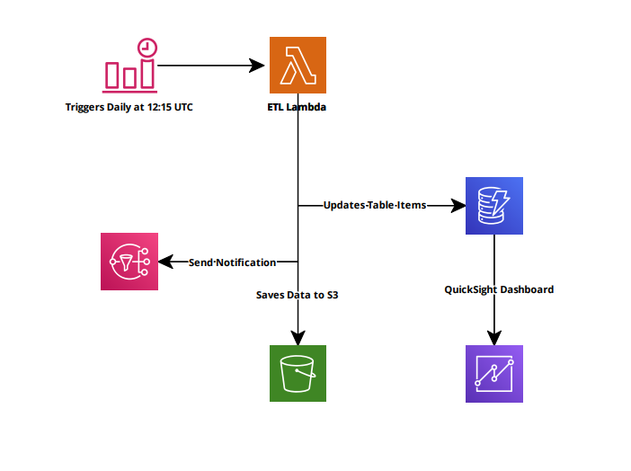
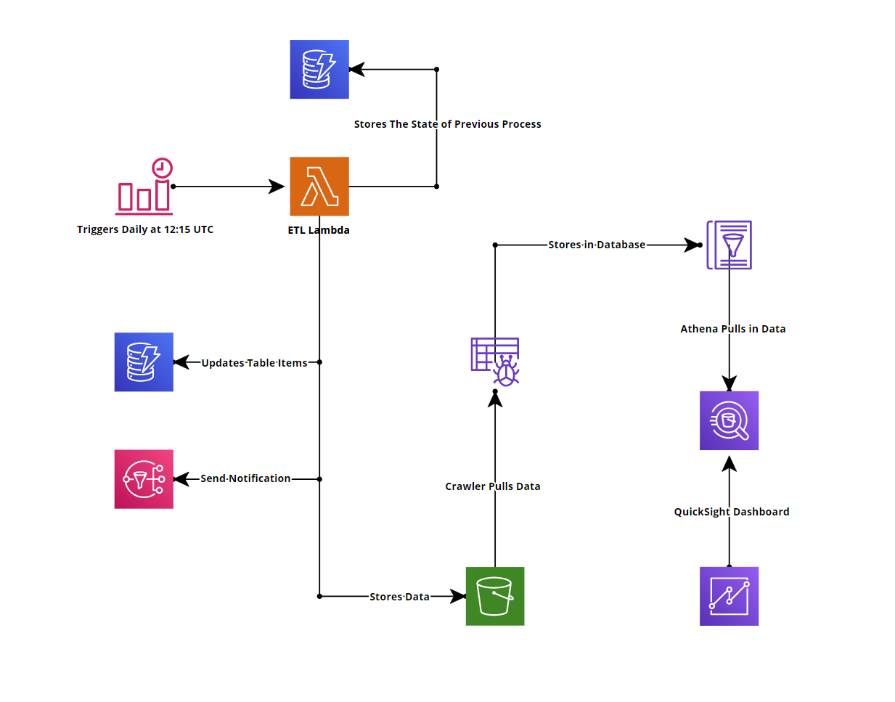
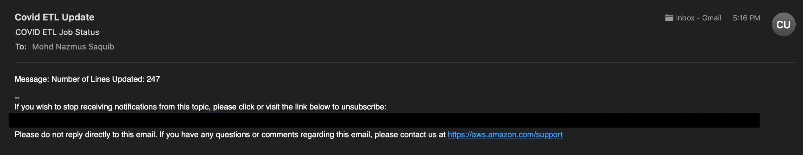
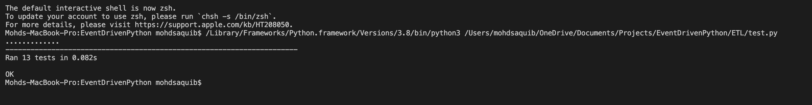
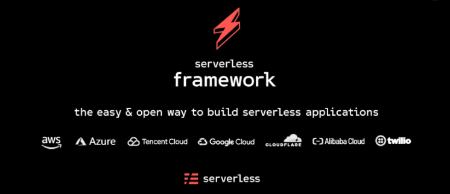
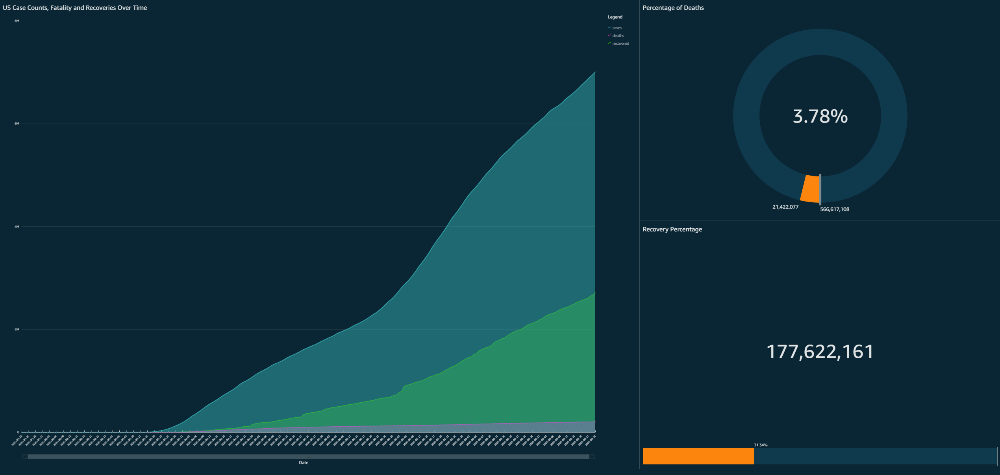

Ever since I got my AWS SAA certificates, I have been eager to challenge myself with
real-life projects. A few weeks ago, I stumbled upon a challenge hosted by a cloud guru ,
and I did not wait for a second and jumped right in. It has been quite a lot of fun learning
and doing the project for the last few weeks, and I am excited to share it.
This project aimed to develop an ETL processing pipeline for COVID-19 data attained from the
New York Times and John Hopkins sources, using Python and various AWS cloud services. This
project incorporated the following AWS services:
S3 Bucket
Glue Crawler
Glue Database
IAM Roles
DynamoDB
EventBridge
Lambda
Cloudwatch
SNS
The following Tech Stacks were also used to develop this project:
Python
Pandas
AWS
The Serverless Framework
Github
To begin this project, I first visualized all the designs, so I have a clear idea of
approaching it. Below is my first mockup of the project. And following that is my final
Infrastructure Architecture.
Initial Infrastructure Architecture

Final Infrastructure Architecture

ETL Job
One of this project's main tasks was to automate it to
run daily to fetch the latest data. I used Amazon EventBridge
(Previously known
as Cloudwatch Events Rule) to set up my cron job daily at 12:15 UTC. It
was a
simple task and was reasonably quick; however, I did not implement this
feature
until I had most of my lambda functions ready later in the process.
Extraction
The next step of the project was to write a lambda code in Python, which would
download both New York Times and John Hopkins data and save it in memory. This was
relatively simple to implement. I used Pandas to take care of this and kept data in
a data frame.
Transformation
In this step, I had to perform some data manipulations on the data downloaded
from the sources mentioned above. First, I had to convert the date fields of
both them to a Date object and not a string. Then combined both of the datasets
by doing an inner join on the date using pandas. And finally, filtering all the
non-US data from the John Hopkins dataset.
While I was working through this step of the code, I found several instances where
there were “NaN” data. To resolve this issue, I used another Pandas method,
fillna(), and replaced it with a “0”.
At first, I designed my project so that after it has downloaded the data, it would
save it to an S3 bucket, and then an S3 event would trigger the transformation
function. This was a tedious workflow and didn’t quite work well. However, as I
progressed through the project, another step stated that the transformation code
should not know where the code is stored, or it should know anything about databases
and that it should be included as a python module. I made this entire task into its
module and called it in my index python code. This made it reusable by other
sections of the project.
Load
The next step of the project was to save the data somewhere. I decided to use
DynamoDB as it’s a robust and super-fast NoSQL database. I used Boto3 to read,
write, and update the transformed data into my database. I also implemented a
mechanism to restrict itself from overwriting data based on the partition key if it
already exists.
I also implemented several errors handling mechanisms in this module. First, I
verified if the date field is appropriately formatted and then confirmed if other
fields are Integers and have values greater than or equal to 0, meaning there
shouldn’t be any data with empty fields. If, for some reason, the code detects an
error while running, the process will end and save the data in an S3 bucket.
I implemented SNS to notify me if the process failed or passed. If it passed, it
would tell me exactly how many rows were updated on a given day. If the operation
failed, it would notify that the process failed and the row of that data where it
failed and why.

One of the main steps of this task was that if the code failed at any point, it
should remember that it failed. And to take on this, I deployed another DynamoDB
table that would solely keep track of the process. So, if my code for any reason
fails midway, it would set the field in to “Failed = True.” And on the next run, my
code would read this database to see my previous process's status. If the code
failed previously, then the function would process the old data first, and after it
has successfully loaded the data in, it would go ahead and process the latest data.
If the previous process successfully went through, my lambda function would only
process the latest data.
Tests
To ensure the code could handle unexpected situations, I wrote a couple of tests
using Python’s built-in test module, unittest. I have never written any tests
before, so it was new to me. I spent a couple of hours learning and writing tests.
It was pretty simple to implement. This helped me identify if any problems occurred
to my main functions after updating them. I also added some of my custom data to
test my primary functions.

Infrastructure as Code (IaC)
As you can see, the entire project is serverless and did not require any servers to
run any of the processes. I used The Serverless Framework to write my infrastructure
out. Why did I use The serverless Framework? Its because it is getting viral as the
cloud industry is growing. It also emphasizes on serverless architecture and is
super duper SIMPLE to use. Another reason was that it helped me package all of my
python dependencies with a simple command. Not only that, but the serverless
framework also allows other third-party dependencies that can be used in your
serverless.yml. It is pretty much similar to writing CloudFormation templates with
extra benefits. Another big reason why I chose this was that you could deploy your
entire infrastructure with a simple command and delete it with another simple
command.

Dashboard
Oh, Boy! Where do I even start? Initially, I thought this would be the easiest step
for this entire project. However, it did not turn that way. Initially, I planned to
use AWS QuickSight to display my data in a dashboard, however mid-way through the
project, I found out that DynamoDB isn’t supported with QuickSight yet. Bummer! I
had to find another way to deploy my dashboard, so I then thought about using
Tableau Public. However, there is no support for AWS to connect with Tableau Public
version, its only available for the professional version, so that was out of the
question. I did more research and found out that QuickSight works excellently with
Amazon Athena. I had to restructure my code a little bit for this work. First, I
changed my load function to save my data after being loaded to a Processed S3
folder. After that, I implemented AWS Glue Crawler, which would pull in the S3
Bucket data and put it inside the AWS Glue Database. Then from there, it was pretty
straight forward; the data would automatically populate over to Athena. And in
QuickSight, it was simple as clicking import data from Athena. Below is a static
image of QuickSight Dashboard.

Working on this project was fun and made me learn tons of new
things. I cannot wait to tackle more challenges in the future from A Cloud Guru. I am
also in love with The Serverless Framework; it is easy and intuitive to develop any
cloud infrastructure. I recommend anyone interested in the cloud to take on this
project. Not only will this project help you understand several AWS services, but it
also enhances your Python skills.